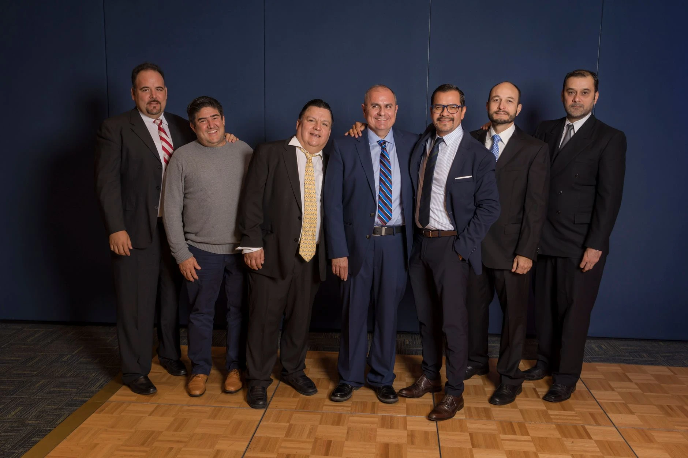

Partenaires
Nous recherchons des partenaires engagés – entreprises, institutions publiques, associations, revendeurs et réseaux professionnels – souhaitant construire des collaborations durables et mutuellement bénéfiques. Ensemble, nous pouvons développer des offres conjointes, co-organiser des événements (conférences, webinaires, ateliers), mettre en place des programmes de distribution ou de co‑branding, et concevoir des projets pilotes innovants au service de nos clients et de vos publics.
Nos partenariats s’articulent autour de valeurs partagées : transparence, fiabilité, respect des engagements et recherche constante de qualité. Nous croyons à une vision commune fondée sur la confiance, l’écoute et la création de valeur à long terme. Par exemple, nous pouvons accompagner un réseau de revendeurs avec des outils marketing dédiés, soutenir une association via des actions de mécénat ou de sensibilisation, ou encore co-développer une solution sur mesure avec une entreprise ou une institution. Nous sommes ouverts au dialogue pour imaginer, avec vous, le modèle de collaboration le plus adapté.
Les domaines de collaboration sont variés : partenariats commerciaux pour élargir votre offre, accords de distribution ou de licence, projets de recherche et d’innovation, programmes de formation, ou encore initiatives à impact social ou environnemental. Nous travaillons aussi bien avec des structures locales qu’avec des organisations nationales ou internationales, en adaptant notre approche à vos enjeux spécifiques.
Concrètement, nous pouvons par exemple : intégrer nos services à votre catalogue, co-construire un programme de fidélisation, développer des contenus pédagogiques communs, ou mettre en place un dispositif de communication croisée (newsletters, événements, campagnes digitales). Chaque partenariat fait l’objet d’objectifs clairs, d’un suivi régulier et d’une évaluation partagée des résultats, afin de garantir une relation équilibrée, évolutive et créatrice de valeur pour toutes les parties prenantes.


Pourquoi devenir partenaire de notre entreprise ?
Collaborer avec notre entreprise, c’est bénéficier d’un levier concret pour accélérer votre développement. Nos partenariats sont pensés pour générer des résultats mesurables : plus de visibilité, plus de contacts qualifiés et plus d’opportunités commerciales. Nous mettons à votre service une équipe dédiée qui vous accompagne à chaque étape, de la définition des objectifs jusqu’au suivi des performances.
En rejoignant notre réseau, vous accédez à un nouveau public ciblé, déjà sensibilisé à vos thématiques. Nous valorisons votre marque sur nos supports et lors de nos actions communes, afin de renforcer votre crédibilité et votre notoriété sur votre marché.
- Visibilité accrue : présence sur nos canaux digitaux, événements et supports de communication.
- Accès à un nouveau public : mise en relation avec une audience qualifiée et engagée.
- Renforcement de l’image de marque : association à une entreprise reconnue pour son sérieux et son expertise.

Nos partenariats se distinguent par leur flexibilité et leur dimension co‑créative. Plutôt que de proposer une offre standardisée, nous construisons avec vous des projets sur mesure : offres conjointes, événements communs, contenus partagés ou lancements de nouveaux services. Vous bénéficiez d’un accompagnement stratégique, mais aussi opérationnel, pour transformer les idées en résultats concrets.
Notre force repose sur un réseau solide et une expertise reconnue dans notre secteur. Nous mettons à votre disposition nos outils, notre expérience et notre équipe marketing pour maximiser l’impact de chaque action.
- Co‑création de projets : conception d’offres et d’actions communes adaptées à vos objectifs.
- Support marketing et communication : campagnes dédiées, contenus, visibilité lors de nos événements.
- Avantages financiers potentiels : partage de revenus, conditions préférentielles, optimisation du retour sur investissement.
- Innovation et agilité : capacité à tester rapidement de nouvelles approches et à ajuster le partenariat selon les résultats.
En choisissant de collaborer avec nous, vous optez pour un partenariat rassurant, transparent et orienté résultats, conçu pour durer et évoluer avec vos ambitions.
Devenons partenaires et créons un impact durable
Vous représentez une entreprise, une association ou une institution et vous cherchez un partenaire fiable pour développer un projet sur mesure ? Contactez-nous pour nous présenter votre activité, vos objectifs de partenariat et le public que vous souhaitez toucher. Indiquez également vos coordonnées complètes (nom, organisation, e-mail, téléphone) afin que nous puissions revenir vers vous rapidement avec des pistes de collaboration adaptées.